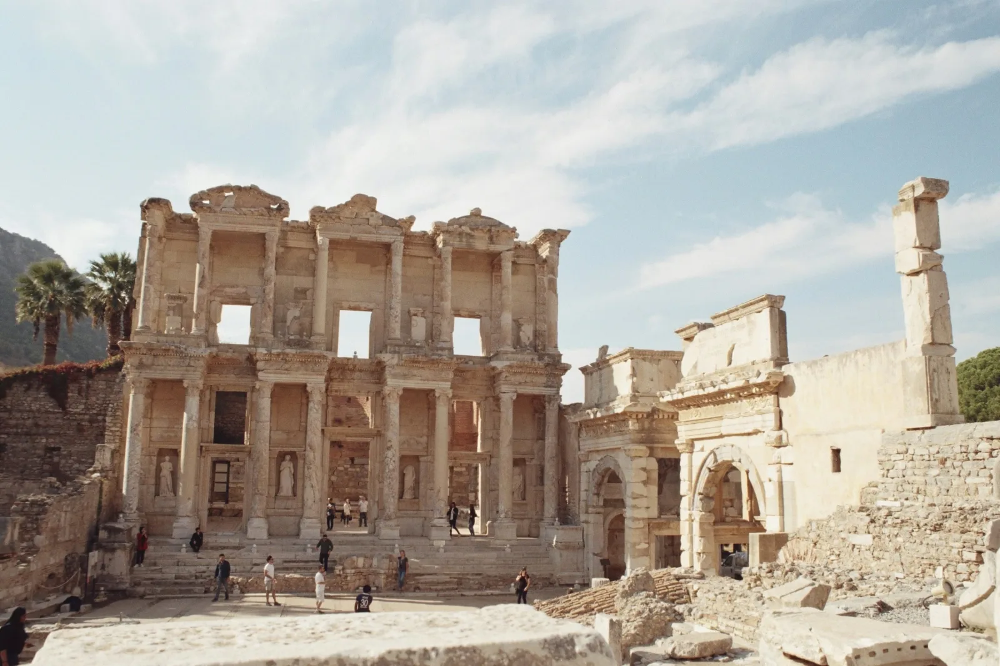

CH. 03 — 歴史
積層する
大地
A Land of Layered Civilizations
アナトリアは、人類最古級の集落跡ギョベクリ・テペ(紀元前9000年頃)を有する土地。
ここは「文明の発祥地」のひとつであり、その後18もの大文明が興っては消えた。
時間が、地層のように折り重なっている。

A photo from the timeline
エフェソス
セルシウス図書館
Celsus Library, Ephesus — 2nd c. AD
エーゲ海沿岸に残る、古代ローマ属州アジアの中心都市。
2世紀に建てられたセルシウス図書館は、ヘレニズム世界の三大図書館のひとつに数えられ、
約12,000巻の蔵書を誇った。
ファサードに立つ四体の女神像は、知恵・徳・思考・学識の象徴。
ヘレニズムからローマへ——文明の継承が、この柱の間に刻まれている。
紀元前 18世紀Hittite
ヒッタイト
— The first to forge iron
世界で最初に鉄器を本格使用したとされる、インド・ヨーロッパ語族の王国。首都ハットゥシャの遺跡は今も残る。紀元前14世紀に最盛期。紀元前1200年頃、「海の民」の到来によって滅亡。
紀元前 4世紀Hellenism
ヘレニズム化
— Alexander's conquest
アレクサンドロス大王の征服によって、アナトリアはギリシア化。ヘレニズム文化の東進拠点となる。古代ギリシアの哲学・芸術・建築が、この地に深く根を下ろした。エフェソスはその象徴。
紀元前 1世紀〜Roman & Byzantine
ローマ、そしてビザンツ
— Constantinople, the new Rome
古代ローマの版図に組み込まれた後、330年にコンスタンティノープル(現イスタンブール)が新首都として整備される。やがて東ローマ(ビザンツ)帝国として独自の文明圏を形成。約千年にわたり、地中海世界のキリスト教中心地となった。
11世紀Seljuk
セルジューク朝の到来
— Turks arrive in Anatolia
中央アジアから西進してきたテュルク系遊牧民が、セルジューク朝としてアナトリアに到来。これが「テュルク化」の始まり。1243年、モンゴル帝国の侵攻によって解体されるが、その遺産は次の帝国に引き継がれる。
1299 – 1922Ottoman Empire
オスマン帝国
— Six centuries of empire
1299年に建国されたオスマン帝国は、最盛期には三大陸にまたがる超大国へと成長。北はハンガリー、西はアルジェリア、南はイエメン、東はインド洋に至る広大な版図を支配した。1453年、コンスタンティノープルを陥落させ、ビザンツ千年の都市を首都に据えた。
1923Republic
共和国の誕生
— Atatürk's modern state
第一次大戦の敗北とオスマン帝国の崩壊。ムスタファ・ケマル・アタテュルクがトルコ独立戦争を率い、1923年10月29日、共和国を宣言。政教分離、ローマ字採用、女性参政権など、矢継ぎ早の近代化改革を断行。イスラム圏で最初の世俗主義国家が生まれた瞬間だった。
 N° 003 — Let Me Explain…
N° 003 — Let Me Explain…